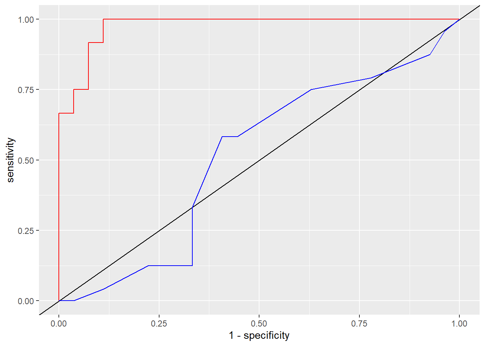
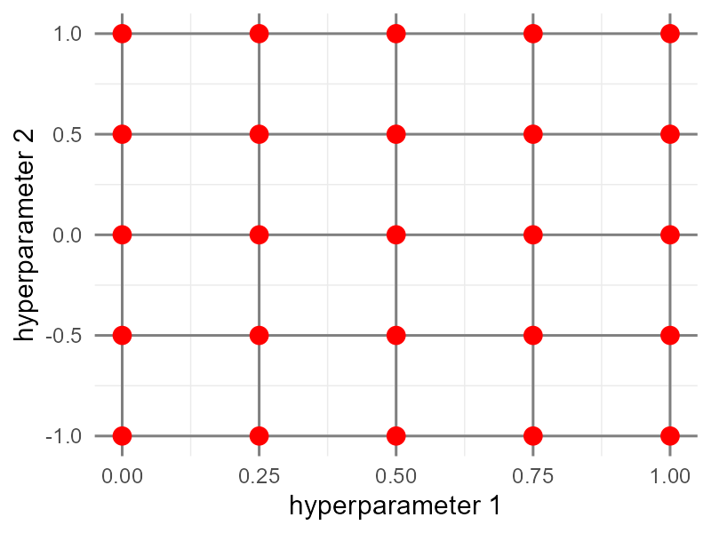
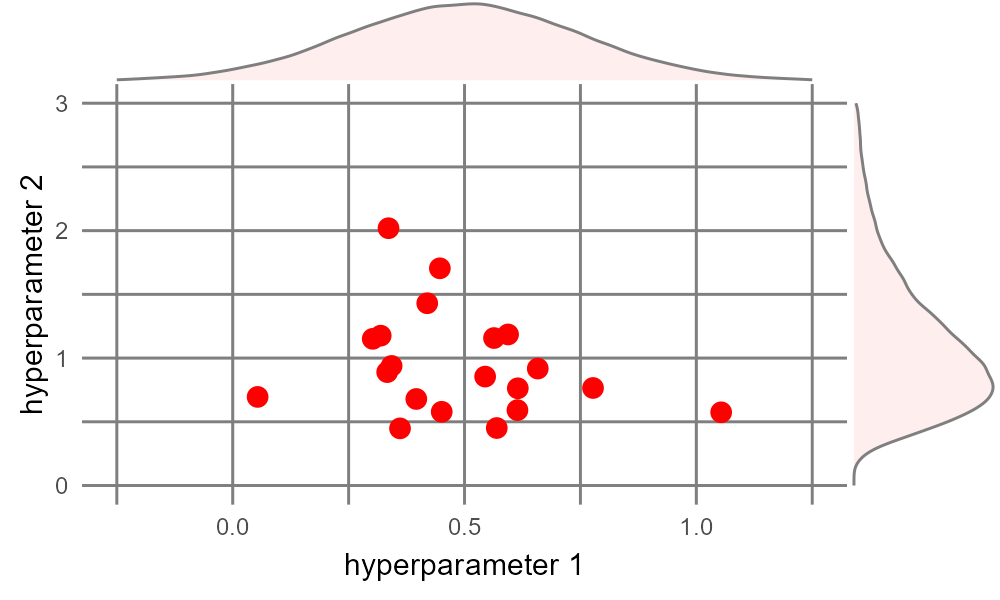
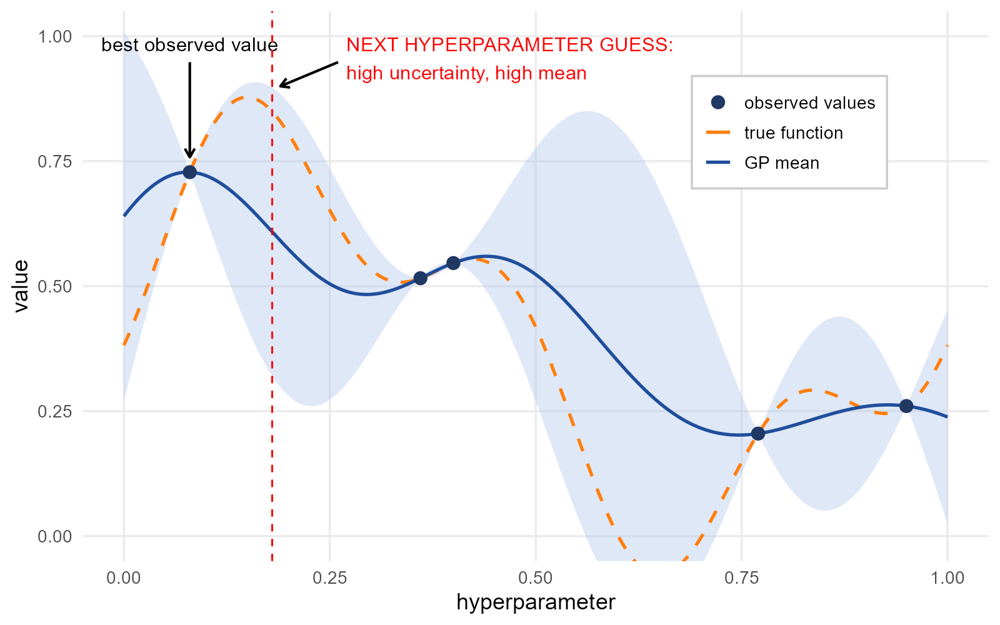

https://vas3k.com/blog/machine_learning/ - This entertaining and informative high-level overview of machine learning, in a similar vein to XKCD or Wait but Why, provides conceptual descriptions of how various ML algorithms work and concrete real-world examples of how you might encounter them in the wild.
3 Setup
3.1 Intro to tidymodels and components
BUILD THIS OUT
load packages
load data
data overview
library(dplyr)### a metapackage like tidyverse, tidymodels contains many model-relevant ### packages incl rsample, parsnip, recipes, yardstick, broom - we don't ### need to worry about the differences here...library(tidymodels) library(palmerpenguins)penguins_clean <- penguins %>%drop_na() %>%### convert characters to factors - easier for modeling engines!mutate(species =factor(species), sex =factor(sex), island =factor(island))penguins_clean$species %>%table()
.
Adelie Chinstrap Gentoo
146 68 119
penguins_clean$sex %>%table()
.
female male
165 168
4 Data Partitioning
One characteristic of machine learning is dividing data into several discrete, non-overlapping bundles, so we can train our algorithms on one set and then test it against another set. These slides give an overview of why this is important and what the overall machine learning process looks like.
For conceptual understanding, let’s see one way of manually partitioning our data, by randomly assigning observations to each of Training, Validation, and Testing partitions with approximate proportions of 70/15/15:
Create a vector with bins allocated in our desired proportions
Randomly assign samples from that vector to each of our observations
Create separate data frames by filtering on those bins.
bins <-c(rep('training', 70), rep('validation', 15), rep('testing', 15))set.seed(123) ### so we all get the same results each timepart_df <- penguins_clean %>%mutate(partition =sample(bins, replace =TRUE, size =n()))# table(part_df$partition) / nrow(part_df)# testing training validation # 0.1681682 0.6786787 0.1531532train_df <- part_df %>%filter(partition =='training')valid_df <- part_df %>%filter(partition =='validation')test_df <- part_df %>%filter(partition =='testing')
NoteStratified Partitioning
Often our data is unbalanced, meaning certain values of our outcome variable show up far more frequently than others - for example, rare species will show up far less frequently in a field study than common species. In such cases, it is a good practice to do “stratified partitioning” to ensure that the proportions of outcome categories within each partition are similar to the proportions in the overall dataset.
It is also sometimes useful to stratify on predictors, to maintain class balance for critical subgroups. In our penguins dataset, there are more than twice as many Adelies as Chinstraps, while male and female are approximately equally represented.
Stratified partitioning would make our manual code more complicated, but it is very easy to do in tidymodels.
4.2 Partitioning With rsample::initial_split
Partition the penguins data, with 85% going into our training set (which we will resample later as 70%-15%), and 15% set aside for final testing. Our outcome variable, sex, is already pretty balanced, so instead we will stratify on the species column (strata = species), so each species will have the same proportional representation in our training and test sets!
Generally we only really need to be concerned when one class (e.g., one species or sex) only makes up ~10% or less of a dataset. For small datasets, imbalance can be very problematic - if one of our species had only 5% of observations, the model would only have 16-17 penguins to learn its patterns!
Let’s further partition our training split into analysis and assessment sets. To get the 85% separated into 70% and 15% accordingly, we can just use proportions. Let’s stratify on sex again!
flowchart LR
A[(penguins_clean)] --> B[/peng_train_df/]
A --> C[/peng_test_df/]
B --> D[Resample]
D --> D1[/peng_analysis/]
D --> D2[/peng_assess/]
5 Setting Up A Model
Hundreds of modeling algorithms are available across many different R packages; while they share similarities, they also include idiosyncratic object formats and methods. The parsnip package within tidymodels provides access to modeling algorithms while enforcing a consistent syntax.
For our classification task, let’s start with a logistic regression model; various packages and functions provide logistic regression, but we’ll stick with the basic one from the stats::glm function.
Define the model type (and “engine” i.e., the source of the algorithm, if desired)
Specify a model with dependent and independent variables, and use parsnip::fit() to train the data
blr_mdl <- parsnip::logistic_reg() %>% parsnip::set_engine('glm') ### this is the default - we could try engines from other packages or functionspeng_fit1 <- blr_mdl %>%### Specify a model with all biometric predictor variables parsnip::fit(sex ~ species + bill_length_mm + bill_depth_mm + flipper_length_mm + body_mass_g, data = peng_analysis)peng_fit2 <- blr_mdl %>%### Specify a model with a sub set of biometric predictor variablesfit(sex ~ species + bill_length_mm + bill_depth_mm, data = peng_analysis)### let's also create a model we know will be bad:peng_fit3 <- blr_mdl %>%### Specify a model with predictors that are likely low valuefit(sex ~ species + island + year, data = peng_analysis)# broom::tidy(peng_fit1)# broom::tidy(peng_fit2)# broom::tidy(peng_fit3)
5.1 Assessing Model Performance
Now we can use our models to predict classifications in our peng_assess_df and judge the prediction quality in several ways. For a classification task, we look at how well it discriminates between our two classes. Let’s check our first model and our garbage model.
peng_pred1 <- peng_assess %>%mutate(predict(peng_fit1, new_data = ., type ='class'))peng_pred3 <- peng_assess %>%mutate(predict(peng_fit3, new_data = ., type ='class'))
Important“Positive” vs. “Negative” for Classification Tasks
In basic classification, we are discriminating between two potential values of a categorical variable. These two values are typically generalized as Positive vs. Negative. These are often arbitrary but knowing which is which is critical to understanding your outcomes. Examples:
Medical Diagnosis: Positive = Has Disease / Negative = Healthy
Spam Detection: Positive = Spam / Negative = Normal Email
In our case, because we treat sex as a factor and female is alphabetically before male, R by default will treat female as Negative and male as Positive. We could force this the other way (e.g., setting factor levels), but it will not affect our overall outcomes.
For classification problems, a “confusion matrix” shows True Positives and Negatives vs. False Positives and Negatives. True female (sex) vs. predicted female (.pred_class) = True Negative; true male/predicted female = False Negative; male/male = True Positive; female/male = False Positive.
peng_pred1 %>%select(sex, .pred_class) %>%table()
.pred_class
sex female male
female 23 1
male 3 24
peng_pred3 %>%select(sex, .pred_class) %>%table()
.pred_class
sex female male
female 3 21
male 9 18
peng_pred1 has a good True Positive Rate and True Negative Rate; peng_pred3 has very high False Positive and False Negative Rates.
For classification problems, “accuracy” is just the proportion of correct predictions, without worrying about which direction those predictions went (True Positive or True Negative).
yardstick::accuracy(peng_pred1, truth = sex, estimate = .pred_class)
A Receiver Operating Characteristic (ROC) curve plots the tradeoff between the True Positive Rate and False Positive Rate as we change the probability threshold for classifying something as class 1 (vs. class 0) - in our case, classifying a penguin as male.
A low threshold means that, even at very low predicted probabilities, we assign “Male” - which means we get most of the males (high True Positive Rate), but we also assign many (true) females to be (false) males (high False Positive Rate). A high threshold means we need a high predicted probability to classify a penguin as male - meaning we err on the side of classifying as female, i.e., a high True Negative Rate - and misclassify many males as females (high False Negative Rate).
Often we don’t even look at the curve, but instead just the area under the curve (AUC) - the ROC curve of a great model will approach the top left of the plot, while a bad model will be close to the diagonal.
To calculate ROC AUC (and the ROC curve) we need not just the predicted classes, but the probabilities associated with the predictions.
peng_prob1 <- peng_assess %>%mutate(predict(peng_fit1, new_data = ., type ='prob'))yardstick::roc_auc(peng_prob1, truth = sex, .pred_female, event_level ='first')yardstick::roc_auc(peng_prob1, truth = sex, .pred_male, event_level ='second')peng_prob3 <- peng_assess %>%mutate(predict(peng_fit3, new_data = ., type ='prob'))yardstick::roc_auc(peng_prob3, truth = sex, .pred_female, event_level ='first')
1
Here, event_level defines whether we’re looking for the first or second class (female/male in our case), and the .pred_XXX should match the event level.
2
Here we swap for event_level = 'second' and look to .pred_male for our probabilities.
roc1_df <- yardstick::roc_curve(peng_prob1, truth = sex, .pred_female)roc3_df <- yardstick::roc_curve(peng_prob3, truth = sex, .pred_female)ggplot(data = roc1_df, aes(x =1- specificity, y = sensitivity)) +geom_abline(intercept =0, slope =1, color ='black') +geom_path(color ='red') +geom_path(data = roc3_df, color ='blue')

6 Resampling and Cross Validation
With resampling, we do multiple rounds of partitioning with our training data - iteratively resampling analysis and assessment partitions. Cross validation (CV) is a specific type of resampling - we create multiple equal-sized partitions, called folds, and then set aside one fold as assessment and the remaining folds as analysis to train our data, then use the second fold as assessment etc. If we split our data into five folds we get “five-fold cross validation” - the generic term is K-fold cross validation.
Five- and ten-fold CV are basically industry standard - balancing computational effort with accurate performance evaluation, but more art than science. More folds –> less bias, but higher computational cost. Another method, generally only used for small data sets, is n-fold where each observation is its own fold (\(k = N\), also called “Leave-One-Out Cross Validation” (LOOCV) since each iteration leaves out one observation as the assessment set).
TipRepeated Cross-Validation
Often, after completing one set of cross-validation, we shuffle the observations into a new set of folds and do it all again, iterating many times - “repeated k-fold cross validation”. Repeated CV helps improve consistency of our evaluation metrics – a single round of CV might be prone to an exceptionally lucky (or unlucky) resample, so multiple repeats will help balance that out.
How many repeats? Like folds, choosing a number is more art than science - but ten is a good starting point, and if the model is pretty unstable (high variance from repeat to repeat) 50-100 repeats is not uncommon.
6.1 Metrics for Assessment
<details on metrics - e.g., RMSE for regression, accuracy for classification>
6.2 Cross Validation: Manual Version
For conceptual understanding, five-fold cross validation on our training set peng_train_df might look like this:
Randomly assign each observation to a fold
Set fold 1 aside as assessment, and folds 2-5 as analysis
Train the desired model on analysis
Use trained model to predict on assessment
Calculate some metric of predictive power, e.g., accuracy for classification or RMSE for regression
Store the metric in a vector
Repeat for the remaining folds
fold_vec <-rep(1:5, length.out =nrow(peng_train_df))peng_folds_df <- peng_train_df %>%mutate(fold =sample(fold_vec, replace =FALSE, size =n()))blm1_results_vec <-rep(NA, 5)for(i in1:5) { assess_df <- peng_folds_df %>%filter(fold == i) analysis_df <- peng_folds_df %>%filter(fold != i) blm1 <-glm(family ='binomial', sex ~ species + bill_length_mm + bill_depth_mm, data = analysis_df) pred_blm1 <- assess_df %>%mutate(prob =predict(blm1, newdata = ., type ='response'),pred_sex =ifelse(prob >0.5, 'male', 'female')) acc_blm1 <-sum(pred_blm1$sex == pred_blm1$pred_sex) /nrow(pred_blm1) blm1_results_vec[i] <- acc_blm1}mean(blm1_results_vec) ### mean accuracy of our given model
1
NOTE: predict() acts differently here than it did earlier, because we are giving it an object of class c('glm', 'lm') - instead of a tidymodels friendly class.
[1] 0.8866541
6.3 Cross Validation with tidymodels
Functions from the tidymodels packages automate a lot of that for us. Additionally, we can create a “workflow” that is easy to read and easy to modify/update with new models or even new algorithms.
Resample the data into five folds (v = 5) in a single line - and optionally lets us also do repeated rounds of cross validation (repeats argument) at the same time! Here we only do 3 repeats to keep our examples from being too slow, but 10 would be a better choice.
peng_train_folds <-vfold_cv(peng_train_df, v =5, repeats =3)
1
Usually “k-fold cross validation” but tidymodels calls it “v-fold”…?
Now let’s create a workflow (from the workflows package in tidymodels) that combines our model and a formula. We already specified a binary logistic regression model above but we repeat that here for clarity. The workflow specifies how R will operate across all the folds.
OK now let’s apply the workflow to our folded training dataset (using the fit_resamples function from the tune package in tidymodels), and see how it performs! Note tune::collect_metrics() automatically reports several relevant metrics for the type of model (classification vs. regression).
blr_fit_folds <- blr_wf %>% tune::fit_resamples(peng_train_folds)### Report out the predictive performance across the five folds:tune::collect_metrics(blr_fit_folds)
Our goal with machine learning is to find a model that best predicts our outcome of interest. Typically we have more than one candidate model to consider, including variations on predictors and/or entirely different algorithms. For each candidate model, we can apply the previous steps. Here, we will try several different algorithms and model specifications.
Model specifications
sex ~ species + bill_length_mm + bill_depth_mm (previous step)
sex ~ species + bill_length_mm + bill_depth_mm + flipper_length_mm + body_mass_g (all biometrics)
sex ~ species + island + year (garbage model, for comparison)
Algorithms
Binomial logistic regression (previous model)
Random Forest classifier: ensemble of small decision trees
Support Vector Machine classifier: finds best boundary that separates different groups
7.1 Define Model Specifications
We can create formula objects easily, and give them a short name for easy reference. This is handy to apply a model specification across multiple algorithms. The formula we would normally insert into the model function, we can just assign to a named object. R will not attempt to apply the formula until we call it within the model function.
spec1 <- sex ~ species + bill_length_mm + bill_depth_mmspec2 <- sex ~ species + bill_length_mm + bill_depth_mm + flipper_length_mm + body_mass_gspec3 <- sex ~ species + island + year
7.2 Define Model Architecture
Using tidymodels (specifically parsnip package) we can define the model architectures separately from the model specifications. Similar to the model specifications, this is handy to apply different algorithms easily. NOTE: you may need to install the ranger and kernlab packages - the model engines are not included in tidymodels.
We already defined blr_mdl above, repeating here for clarity
2
'ranger' is the default engine for RF, so technically we don’t need to specify here, but if we wanted to use a different computational engine (e.g., 'randomForest'), we could put that here.
3
Random Forest can be used for classification OR regression; here need to specify which approach we want!
4
The default for svm_linear is LiblineaR but it doesn’t work well with character variables, so here we’ll specify an alternative computational engine from the kernlab package.
5
Similar to random forest, support vector machines can be used for classification OR regression, so we need to specify which.
TipComputational Engines
Most model algorithms are available from different computational engines, e.g., for logistic regression we could use the glm() implementation, or glmnet, LiblineaR, stan, etc. To see the available engines for an algorithm, use show_engines() with the name of the algorithm function in parsnip, e.g., show_engines('logistic_reg') or show_engines('rand_forest').
7.3 Compare Models
Having defined the model specifications and architectures, let’s create workflows, apply them to our peng_train_folds set, and see the results. Note how little we have to change to test a completely different model!
Iterate over the specifications using purrr::map, collecting the metrics across the specs as a list of dataframes, which we then bind together into a single dataframe.
# A tibble: 3 × 5
model_spec .config accuracy brier_class roc_auc
<chr> <chr> <dbl> <dbl> <dbl>
1 sex ~ species + bill_length_mm + bill_de… pre0_m… 0.873 0.0887 0.954
2 sex ~ species + bill_length_mm + bill_de… pre0_m… 0.920 0.0607 0.975
3 sex ~ species + island + year pre0_m… 0.472 0.253 0.483
7.4 Results
Across all algorithms, specification 2 (using all available biometric predictors) moderately outperformed specification 1 (with fewer biometric predictors), and specification 3 (with no biometrics) was generally as bad as just random guessing.
Across the algorithms, SVM > Logistic Regression > Random Forest.
Based on these performance evaluation metrics, our final model would use specification 2 with a support vector machine algorithm.
8 Finalizing the Model
At this point, we have partitioned our data using cross validation to identify the best model. Now, we can put in all the training data into our selected model to finalize our model parameters, weights, and coefficients, then compare to the test data we set aside at the very beginning. The function parsnip::last_fit() does all this for us, when we pass it our peng_split object that contains both the peng_train_df and peng_test_df.
### set up our final model as a workflowfinal_workflow <-workflow() %>%add_model(svm_mdl) %>%add_formula(spec2) ### specification with all biometric variablesfinal_fit <-last_fit(final_workflow, peng_split)collect_metrics(final_fit)
So far we have split our data, used cross validation to identify the best model algorithm and specification, then applied that to our full training data. The tidymodels model functions (logistic_reg, random_forest, svm_linear, etc.) each have several hyperparameters, configuration settings that affect how the model learns from the data. Out of the box, tidymodels assigns sensible values for those hyperparameters, but in some cases, those default values can be tweaked to improve the machine learning performance - particularly to avoid overfitting and underfitting. Model parameters (such as model coefficients and weights) are learned from the data, but hyperparameters control the learning process itself.
Random Forest, for example, has parameters that control the number of decision trees, the number of random features (variables) considered at each node split, tree depth, etc. Support Vector Machines are configured with parameters for kernel (the mathematical function to transform data into higher-dimensional space - linear, polynomial, distance-based methods), and regularization parameter C and gamma parameter \(\gamma\) to trade off between smoother vs. more tightly curving decision boundaries. Other algorithms, including logistic regression, might have hyperparameters to apply penalties or costs to large coefficients or large feature sets.
A grid search tuning algorithm assigns a vector of values to test for each hyperparameter. Across multiple hyperparameters, this creates a multi-dimensional grid or array of possible combinations. Grid search checks every single combination to look for the optimal set. As such, it is intuitive and thorough, but computationally expensive - a brute force approach.

A randomized search tuning algorithm randomly samples many potential combinations of hyperparameters. The values to test for each hyperparameter are drawn from some distribution provided by the user. Unlike grid search, this tuning algorithm concentrates its efforts on regions of each hyperparameter that are most likely according to the given probability distributions, and is generally able to find a good combination faster than a complete grid search. In the example image, test values for hyperparameter 1 are chosen assuming a normal distribution, while values for hyperparameter 2 are chosen from a skewed distribution.

Bayesian optimization tuning algorithm iteratively builds a probabilistic map across hyperparameter space, using a Gaussian process (GP) to approximate the true objective function we want to maximize. To identify likely values to sample, the algorithm focuses on areas of the parameter space with high information value. This balances “exploration” (areas of high uncertainty) against “exploitation” (areas of high expected value). As each point is tested, that information is fed back to the probabilistic model of parameter space, and the next point is chosen to once again maximize the expected information value.
In the example shown (for a single hyperparameter, for simplicity), the black points have already been tested - so uncertainty collapses to zero. A value of ~0.18 falls in a region of high uncertainty (wide confidence interval) and likely high value (GP mean is high). After sampling this point, the confidence intervals and GP mean function will shift accordingly, and the iteration will continue until some stop rule is reached.

9.2 Tuning Model Hyperparameters
Each model type has a different set of hyperparameters with different default values and ranges, which can be found by querying the model function help page (for our purposes, ?svm_linear reveals two parameters, cost and margin).
To prepare for tuning, we redefine our model and set the model’s parameters to a placeholder function tune() to flag it for optimization. Then let’s rebuild our model specification using spec1 from above (the one with all the biometric variables) using the same workflow from before. We will also reuse our folds defined above - peng_train_folds defined with vfold_cv() - for cross validation during the tuning process.
Let’s try Bayesian optimization! (A grid search is already outlined in the tidymodels documentation).
We provide our model specification and our resamples to the tune_bayes() function to identify the best values for our parameters. From these results, we select the best parameter set using the cleverly named function select_best().
{kind=link}
{kind=link}